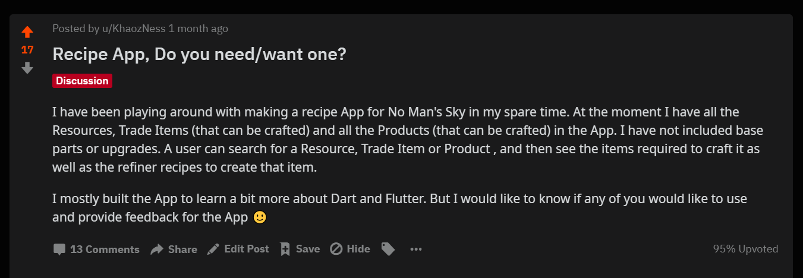
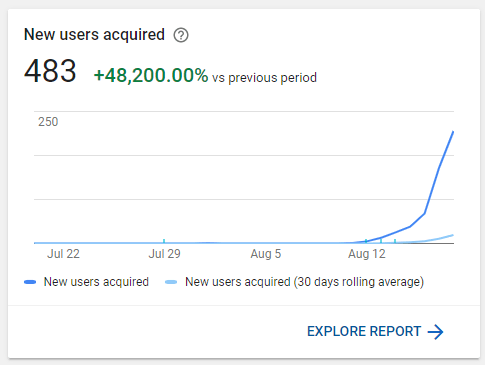

I created the Assistant for No Man's Sky App.
I have done 2 presentations to the company I work for, one in-front of around 10 people that I prepared for and the other in-front of the whole company around 500 that I was not prepared for 😅. So I am pretty good at talking about my first successful App, hopefully I am good at writing about it too.
For about 10 days I had no internet at home, VumaTel had decided that even though I had been a paying customer for over 2 and a half years, they would not give me the internet I was paying for. They also never reimbursed me for the down time which they admitted fault to. During the down time I could only play games that were installed and No Man's Sky was one of them. It had been a long time since I had played and the updates brought new items with them, so I didn't remember/know all the recipes. Since I had internet on my phone I tried using the Gamepedia wiki, but their mobile support was terrible. So I looked in the Google Play Store for an App. Found only 1 and it had a "donate to unlock all the features that are actually useful" mechanic. So I decided to create my own App.
Planning
My idea was simple, and so the App would be simple as well. I wanted to display a list of all the items, have the ability to search and on clicking an item see more details about that item as well as the crafting recipe. I decided that I would develop the App in Flutter so that I could one day release to iOS without rebuilding the whole App. I also decided to use the Wiki to get all the in game info for each item.
Proof of Concept
I had only used Flutter once before and so was quite new to the Framework. It took me a week or two of only working in the evenings to get a proof of concept. A lot of the time was also spent on getting the actual game data. In the beginning I was scraping the Gamepedia wiki. I would later realise how out of date the wiki was. After getting to a point where I was happy I asked the No Man's Sky community if they thought it would be useful on https://www.reddit.com/r/NoMansSkyTheGame/. Pretty much asking if I should release the App to the public.

I got a few responses. Not as many people said that they wanted the App, and quite a few pointed out that there was already an App that only required a donation.
Releasing the App to the world
I decided that I would release the App and see what feedback I would get. I started looking at a service offered by CodeMagic.io, to build and release my App automatically. It is a very easy to use platform with some great features. I have been using it ever since. Their developers have also responded to all of my issues and fixed bugs on their side very quickly. While I was learning their user interface and setting everything up, I accidentally released a production version to the Google Play Store 😅.
I contacted Google Support asking them to 'undo' my release but it was too late 😂, the App was live and publicly available. I did get a response from Google Play Support 2 weeks later, saying that there was nothing they can do 😂. At least they responded.
Continued Dev and Support
Once the App was released (12 August 2019) I was kind of responsible for it. I felt that it was my responsibility to look after what I had created and make sure that it was the best that it could be. Unlike my other side projects that were never released and therefore never used, I had users and they wanted a great App.

I adopted a weekly release schedule, on Thursday nights I prepare release notes for the next day, which I post to Reddit to let everyone know what the latest update contains. I have progressively moved the release time of the Reddit post to 8PM GMT, as this meant that my largest audience, the USA, would be able to see the Reddit post at a reasonable time and I would not have to stay up past midnight. 8PM GMT is lunch time in the West and 3PM in the East of the USA.
Wrapping up
I wanted to create this post long ago, but did not manage to find the time 😅. I plan on writing a few more, each focusing on something different such as the Coding, Community Management, App Stores, etc.
I hope that you enjoyed the post, please feel free to get in contact with me via email or join the Discord server 😁